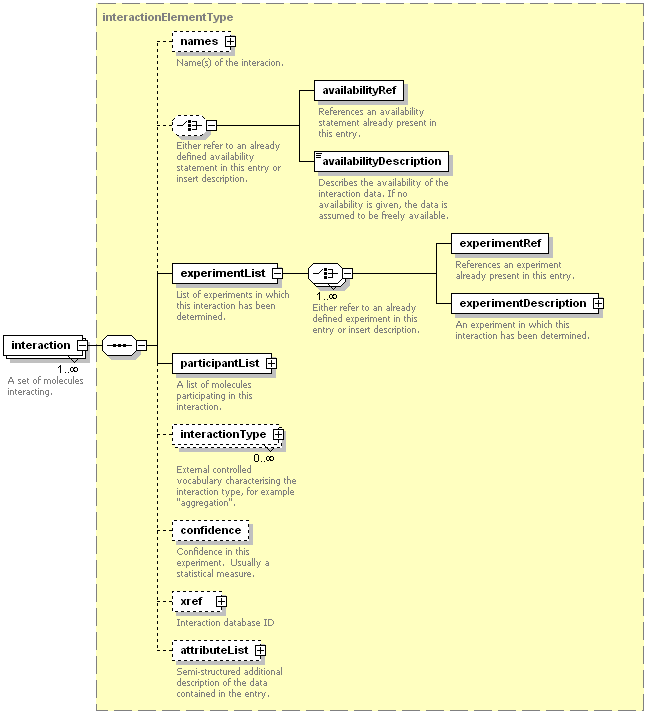

Molecular InteractionXML Format Documentation
Version 1.0
Introduction
The Proteomics Standards Initiative (PSI) aims to define communitystandards for data representation in proteomics to facilitate datacomparison, exchange and verification. The Proteomics Standards Initiative was founded at the HUPO meetingin Washington, April 28-29, 2002 (see Science296, 827). As a first step, the PSI is developing standards for twokey areas of proteomics: massspectrometry and protein-proteininteraction data.
This document decribes the molecular interaction data exchangeformat. PSI is following a leveled approach to building thisspecification. Level 1 will describe protein interactions at a basiclevel that covers a large amount of currently available data.Subsequentlevels will add capability to represent new molecular interactioninformation that the community wishes to exchange.
The scope of PSI MI is currently limited to protein-proteininteractions. Other molecules, such as small molecules, DNA and RNA maybe taken into account in the future.
PSI MI was designed by a group of people including representativesfrom database providers and users in both academia and industry. PSI MIis expected to be supported by the DIP, MINT, IntAct and BIND databases.
Purpose of the PSI MI XMLformat
The PSI MI format is a data exchange format for protein-proteininteractions. It is not a proposed database structure. Intended usagesare described by the use cases documentation.These use case descriptions also provide hints for future tools to bedeveloped.
Purpose of thisdocument
The purpose of this document is to describe the general structure ofthe PSI MI XML specification in a more user-friendly manner than thespecification does itself. For the detailed and most up-to-datedescription please see the auto-generateddocumentation. This documentation also provides additionalinformation, e.g. sample data files and use case descriptions.
Structure of a PSI MIrecord
The root element of a PSI MI XML file is the entrySet. An entrySetcontains one or more entries. Each entry is a self-contained unit. Thisallows to easily concatenate the contents of multiple files into asingle file by simply adding all the entries into the entrySet.

Figure 1: The entry top level element
Each entry describes one or more protein interactions. The PSI MIformat can be used in two forms, a compact and an expanded form. In thecompact form, all interactors (proteins), experiments, and availabilitystatements are described once in the respective list elements, and thenonly referred to by references from the individual interactions in theinteractionList. The compact form allows a dense, non-repetitiverepresentation of the data, in particular for large data sets.
In the expanded form, all proteins, experiments, and availabilitystatements are described directly in the interaction element. As aresult, each interaction is a self-contained element providing allnecessary information. The expanded form results in larger files, butismore suitable for conversion to displayed data, e.g. HTML pages. ThePSIMI consortium provides tools to convert the compact into the expandedform and back.
In the next sections, the top level elements shown in Figure 1 andtheir function will be described.
The source element describes the source of the entry, usually theorganisation which provides it. It also contains a release (number) anda releaseDate.
The availabilityList provides statements on the availability of thedata, usually copyright statements. In the current version, theavailability statements are free text. The PSI MI format might later beextended to provide predefined availability statements.
The experimentList contains experimentDescriptions. EachexperimentDescription describes one set of experimental parameters,usually associated with a single publication. In large-scaleexperiments, normally only one parameter is varied across a series ofexperiments, usually the bait. The PSI MI format describes the constantparameters, e.g. experimental techniques, in an experimentDescription,while the variable parameters, e.g. the bait, are described in theinteraction element.
The interactorList describes a set of interactors participating in aninteraction. In the current version of the PSI MI standard, interactorsare proteins. It is planned to extend this to other types, for examplesmall molecules, in future versions. The interactor element describesthe "normal" form of a protein, consisting of the "administrative" datalike name and crossreferences, and organism and amino acid sequence.Attributes which are relevant for a specific interaction, in particularsequence features, are described in the participant element within aninteraction.

Figure 2: Interaction element
The interactionList contains one or more interaction elements.Each interaction contains a description of the data availability(copyright), and a desciption of the experimental conditions underwhichit has been determined. Both of these can either be integrated into theinteraction element (expanded form) or refer to the respective lists inthe entry (compact form) as described above.

Figure 3: Participant element
Each interaction contains two or more participants, the moleculesparticipating in the interaction. Each participant element contains adescription of the molecule in its "normal" form, either by referencetoan element of the interactorList, or directly in an interactor element.
Additional elements of the participant element describe the specificform of the molecule in which it participated in the interaction. ThefeatureList describes sequence features of the protein, for examplebinding domains relevant for the interaction. The role describes theparticular role of the protein in the experiment, usually whether theprotein was a bait or prey.
The attributeLists are placeholders for semi-structured additional datathe data provider might want to transmit. They contain simple tag-valuepairs.
see http://psidev.sourceforge.net/mi/xml/doc/MIF.html
Use of external controlledvocabularies
Where possible, external controlled vocabularies are referenced fromPSI MI. External controlled vocabularies are used in two forms:
- Open controlledvocabularies: We think that no existing controlled vocabulary providesall necessary terms for the given attribute in the PSI MI format. Inthis case, it is up to the data provider to choose a controlledvocabulary, or to provide a free text string if no appropriatecontrolled vocabulary exists.
- Closed controlledvocabularies: We think that there is a controlled vocabulary whichappropriately covers all necessary terms for the given attribute. Inthis case, only terms from the defined vocabulary should be used.
The following closed controlled vocabularies are referenced by PSI MI:
- interaction type
- sequencefeature type
- feature detection
- participant detection
- interaction detection
These CVs are grouped together in one pair of *.dag (hierarchy) and*.def (definitions) files in GeneOntology flat file format. (allfiles, GO format: psi-mi.dag,psi-mi.def, HTML version of GOformat).
The correctness of references to external controlled vocabularies iscurrently not enforced by the PSI MI schema. It is the responsibilityofthe data provider to ensure that only existing terms at an up-to-datedata source are referenced. The World Wide Web Consortium (W3C) hasrecently issued a new recommendationfor referencing between XML documents. Once this recommendation isimplemented by standard software, we will include it in the PSI MIschema.
List of planned features
Because we are following a leveled approach, we are interested inknowing what the community wishes to be included in the next level. The following items have been tagged for inclusion in the nextlevel:
- Intramolecular interactions
- Inclusion of other molecule types, e.g. DNA, RNA, small molecules
The latest list of features to discuss/include in the future can befound here:
http://sourceforge.net/tracker/?atid=511101&group_id=65472&func=browse
How to comment
If you would like to comment on this document, the PSI MI XMLspecification, please send a mail to:
psidev-mi-dev@lists.sourceforge.net Available data
- The sample filescontain authentic data, though we don't take any responsibility for thecorrectness of the data.
- HPRD provides PSI MI formatteddownloads of interaction data by adding /psimi to a standard moleculeview URL. Sample URL:
http://www.hprd.org/protein/00150/psimi - Hybrigenics H.pyloridataset from
Rain JC, Selig L, De Reuse H, Battaglia V, Reverdy C, SimonS, Lenzen G, Petel F, Wojcik J, Schachter V, Chemama Y, Labigne A,Legrain P.: The protein-protein interaction map of Helicobacter pylori.Nature. 2001 Jan 11;409(6817):211-5. PMID: 11196647.
Available after registration from http://pim.hybrigenics.com. - IntAct offers PSI MI data files at ftp://ftp.ebi.ac.uk:/pub/databases/intact/current/xml and dynamically generated PSI MI data: A graphical interaction network viewer allows to download thedisplayed network in PSI MI format, for example for further analysis inone of the tools listed below. Sample URL:
http://www.ebi.ac.uk/intact/graph2mif/getXML?ac=EBI-367&depth=1&strict=false - MINT offers thecomplete dataset in PSI MI format.
- DIP offers thecomplete dataset in PSI MI format.
Tools
PSI MI XML format is supported by a growing list of tools. Currentlyavailable are:
Data submission
The following databases currently accept submissions of PSI MIformatted interaction data:
Further information andrelevant links
Databases involved:
Companies involved:Related Efforts: